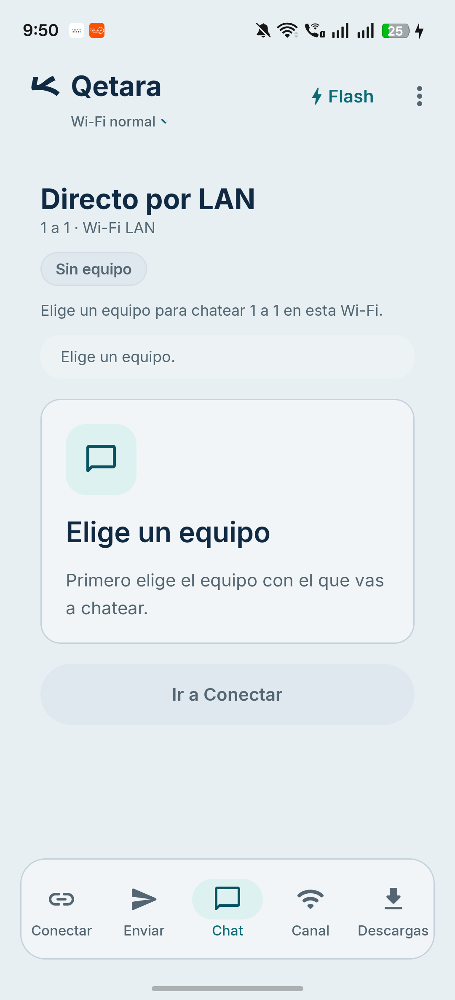
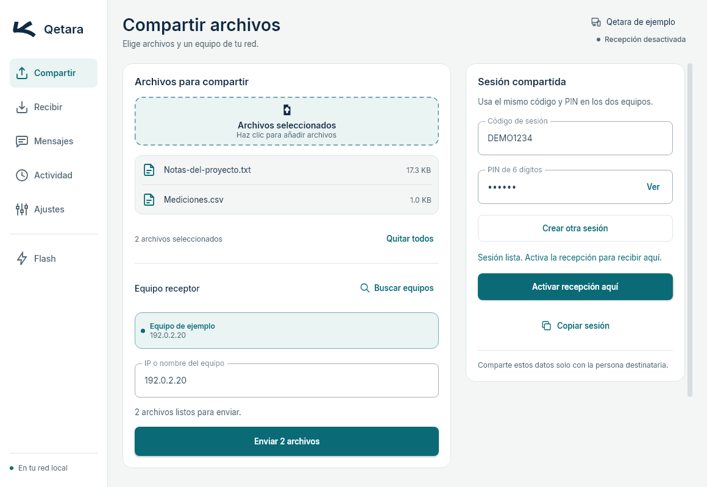

Referencia local de cambios acotados para Android y PC. Conserva Inter, colores y geometría de marca.
Primero elige el equipo con el que vas a chatear.
Vacío inicial. Se conserva una tarjeta y una acción principal. Se eliminan las dos instrucciones redundantes que antecedían a la tarjeta.
Adjunto las notas de la reunión.
Recibido. Las revisamos en la próxima reunión.
Búsqueda con teclado. Campo, cierre y contador permanecen accesibles. Se ocultan cabecera informativa y editor mientras se busca. Cerrar recupera el borrador.
Los controles A− / Normal / A+ mantienen su aspecto. Sus etiquetas accesibles expresan reducir, restablecer y aumentar el tamaño de texto.
Resumen estable. El botón de revisión ocupa la fila del contador existente. La selección conserva tres filas de vista previa. «Mostrar todos» hace accesibles los equipos restantes y el seleccionado sigue visible.
Revisión completa. Nombre y ruta distinguen archivos homónimos. Aplica también a Flash. Este esquema muestra datos sintéticos y no define una nueva apariencia de diálogo.
Si la sesión caduca y termina en IDLE, conservar el motivo de caducidad.
El error de un intento anterior no debe ocultar la condición que ahora falta. Los controles de selección quedan desactivados durante un envío activo.

Android · captura anterior al cambio. Manifest original.

PC · render Compose/Skia previo, con datos sintéticos y sin red. Manifest original.